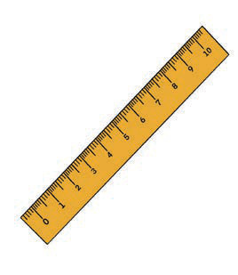
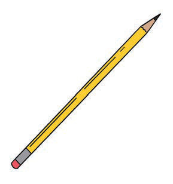
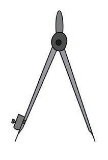
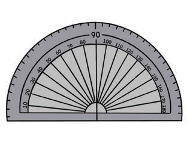
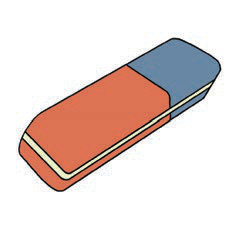
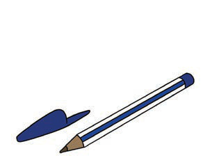

Vifaa vingine vinavyoweza kutumika katika uchoraji wa ramani ni kama kompyuta, simujanja, tableti, ubao wa kuchorea wa kidijitali na kalamu ya kuchorea ya kidijitali. Pia, mchoraji anaweza kuhitaji programu za kuchorea kama vile: programu za “Computer Aided Design” (CAD) na “Geographical Information System” (GIS).
Kuchora ramani sahili
Ramani sahili huchorwa bila kutumia skeli kuwasilisha mahali vitu vinapopatikana kwenye uso wa dunia.
Hatua za uchoraji wa ramani sahili
Ili kuchora ramani sahili, ni vema kutambua ukubwa, umbo na uelekeo wa eneo unalotaka kuliwasilisha kwenye ramani sahili;
bainisha maumbo, ukubwa na mahali vitu muhimu vinapopatikana katika eneo unalotaka kuliwasilisha kwenye ramani;
andaa eneo litakalotumika kuchora ramani sahili, kwa kuchora umbo la mraba au mstatili kwenye karatasi. Hakikisha umeacha eneo kwa ajili ya kichwa cha ramani, ufunguo na maelezo;